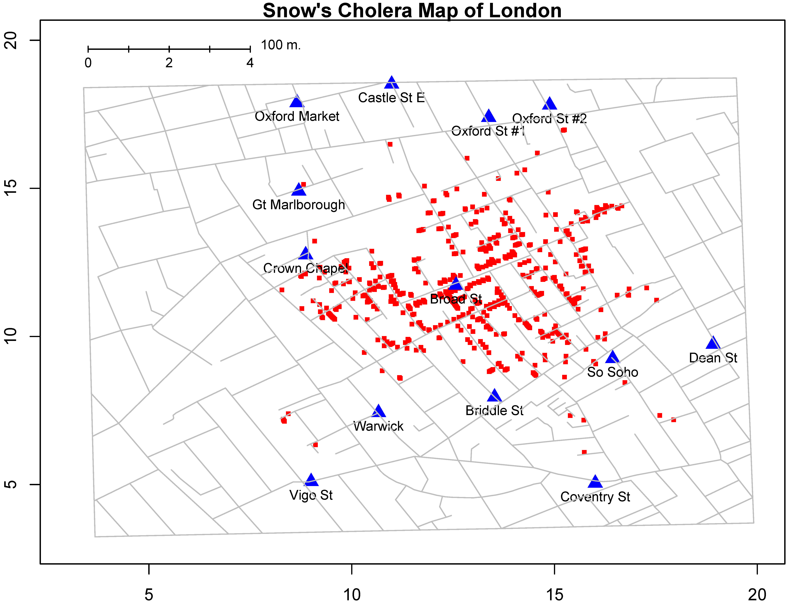
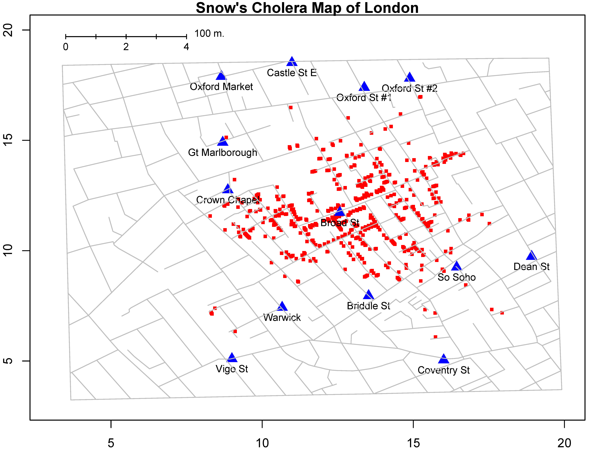
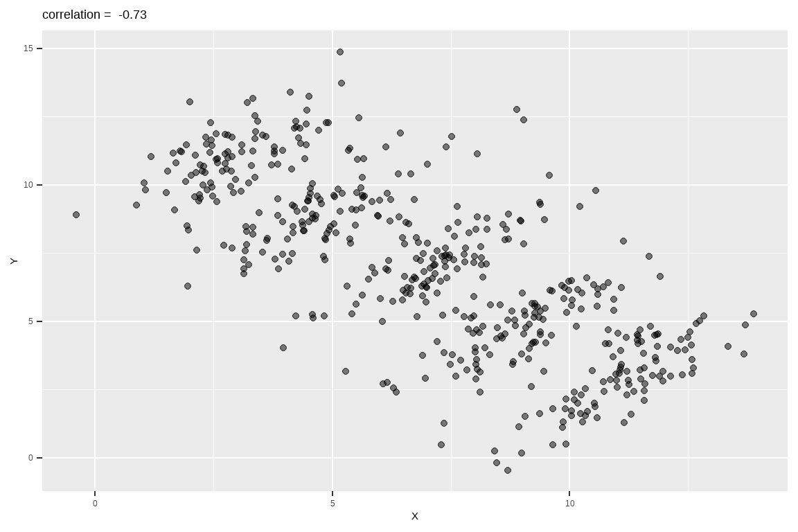
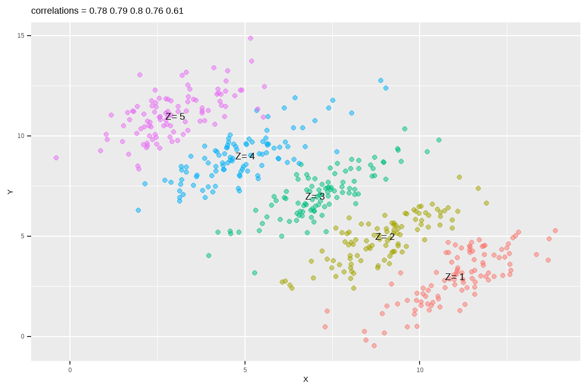

第 4 章 数据可视化
上节课介绍了R语言的基本数据结构，可能大家有种看美剧的感觉，有些懵。这很正常，我在开始学习R的时候，感觉和大家一样，所以不要惊慌，我们后面会慢慢填补这些知识点。
这节课，我们介绍R语言最强大的可视化，看看都有哪些炫酷的操作。
library(tidyverse) # install.packages("tidyverse")
library(patchwork) # install.packages("patchwork")4.1 为什么要可视化
我们先从一个故事开始，1854年伦敦爆发严重霍乱，当时流行的观点是霍乱是通过空气传播的，而John Snow医生（不是《权力的游戏》里的 Jon Snow）研究发现，霍乱是通过饮用水传播的。研究过程中，John Snow医生统计每户病亡人数，每死亡一人标注一条横线，分析发现，大多数病例的住所都围绕在Broad Street水泵附近，结合其他证据得出饮用水传播的结论，于是移掉了Broad Street水泵的把手，霍乱最终得到控制。
 

另一个有趣的例子就是辛普森悖论（Simpson’s Paradox）。比如我们想研究下，学习时间和考试成绩的关联。结果发现两者呈负相关性，即补课时间越长，考试成绩反而越差（下图横坐标是学习时间，纵坐标是考试成绩），很明显这个结果有违生活常识。

事实上，当我们把学生按照不同年级分成五组，再来观察学习时间和考试成绩之间的关联，发现相关性完全逆转了! 我们可以看到学习时间和考试成绩强烈正相关。
辛普森悖论在日常生活中层出不穷。 那么如何避免辛普森悖论呢？我们能做的，就是仔细地研究分析各种影响因素，不要笼统概括地、浅尝辄止地看问题。其中，可视化分析为我们提供了一个好的方法。
4.2 宏包ggplot2
ggplot2是RStudio首席科学家Hadley Wickham在2005年读博士期间的作品。很多人学习R语言，就是因为ggplot2宏包。目前， ggplot2已经发展成为最受欢迎的R宏包，没有之一。
我们可以看看它2019年cran的下载量
library(cranlogs)
d <- cran_downloads(package = "ggplot2", from = "2019-01-01", to = "2019-12-31")
sum(d$count)## [1] 98897424.3 ggplot2 的图形语法
ggplot2有一套优雅的绘图语法，包名中“gg”是grammar of graphics的简称。

ggplot()函数包括9个部件：
- 数据 (data) （ 数据框）
- 映射 (mapping)
- 几何对象 (geom)
- 统计变换 (stats)
- 标度 (scale)
- 坐标系 (coord)
- 分面 (facet)
- 主题 (theme)
- 存储和输出 (output)
其中前三个是必需的。
Hadley Wickham将这套语法诠释为:
一张统计图形就是从数据到几何对象(geometric object，缩写geom)的图形属性(aesthetic attribute，缩写aes)的一个映射。
此外，图形中还可能包含数据的统计变换(statistical transformation，缩写stats)，最后绘制在某个特定的坐标系(coordinate system，缩写coord)中，而分面(facet)则可以用来生成数据不同子集的图形。


4.4 映射
我们用ggplot2宏包内置数据集mpg来演示
1999年和2008年期间，市面上38种流行车型，燃油经济性数据
mpg包含234行和11个变量的数据框
## Classes 'tbl_df', 'tbl' and 'data.frame': 234 obs. of 11 variables:
## $ manufacturer: chr "audi" "audi" "audi" "audi" ...
## $ model : chr "a4" "a4" "a4" "a4" ...
## $ displ : num 1.8 1.8 2 2 2.8 2.8 3.1 1.8 1.8 2 ...
## $ year : int 1999 1999 2008 2008 1999 1999 2008 1999 1999 2008 ...
## $ cyl : int 4 4 4 4 6 6 6 4 4 4 ...
## $ trans : chr "auto(l5)" "manual(m5)" "manual(m6)" "auto(av)" ...
## $ drv : chr "f" "f" "f" "f" ...
## $ cty : int 18 21 20 21 16 18 18 18 16 20 ...
## $ hwy : int 29 29 31 30 26 26 27 26 25 28 ...
## $ fl : chr "p" "p" "p" "p" ...
## $ class : chr "compact" "compact" "compact" "compact" ...| 序号 | 变量 | 含义 |
|---|---|---|
| 1 | manufacturer | 生产厂家 |
| 2 | model | 类型 |
| 3 | displ | 发动机排量，升 |
| 4 | year | 生产年份 |
| 5 | cyl | 气缸数量 |
| 6 | trans | 传输类型 |
| 7 | drv | 驱动类型(f =前轮驱动，r =后轮驱动，4 = 4wd) |
| 8 | cty | 每加仑城市里程 |
| 9 | hwy | 每加仑高速公路英里 |
| 10 | fl | 汽油种类 |
| 11 | class | 类型 |
4.4.1 排量越大，越耗油吗？
这里提出一个问题，是不是汽车的排量越大越耗油吗？
回答这个问题，我们用到mpg数据集其中的三个变量
- displ： 发动机排量, 排量
- hwy： 每加仑英里数，油耗
- class：汽车类型
为考察，发动机排量(displ)与每加仑英里数(hwy)之间的关联，先绘制这两个变量的散点图，

ggplot()表示调用该函数画图，data = mpg表示使用mpg这个数据框来画图。aes()表示数据和视觉属性之间的映射，
aes(x = displ, y = hwy)，意思是变量displ作为（映射为）x轴方向的位置，变量hwy作为（映射为）y轴方向的位置。
aes()除了位置上映射，还可以实现色彩、形状或透明度等视觉属性的映射。geom_point()表示绘制散点图。+表示添加图层。
运行脚本后生成图片：

刚才看到的是位置上的映射，ggplot还包含了颜色、形状以及透明度等图形属性的映射，
比如我们在aes()里增加一个color = class, 具体来说，不同的汽车类型, 用不同的颜色来表现。

此图绘制不同类型的车，displ和hwy的散点图， 用颜色来实现分组。
大家试试下面代码呢，
一些默认的设置

4.5 映射 vs.设置
想把图中的点指定为某一种颜色，可以使用设置语句，比如

大家也可以试试下面


4.6 几何对象
geom_point() 可以画散点图，也可以使用geom_smooth()绘制平滑曲线，


4.7 Global vs. Local
ggplot(mpg, aes(x = displ, y = hwy, color = class)) +
geom_point(aes(x = displ, y = hwy, color = class))

大家可以看到，以上两段代码出来的图是一样。但背后的含义却不同。
事实上，如果映射关系aes() 写在ggplot()里,
x = displ, y = hwy, color = class 为全局变量。
如果映射关系aes() 写在几何对象geom_point()里, 就为局部变量, 比如。
如果geom_point()中缺少所绘图所需要的映射关系，就会继承全局变量的映射关系aes(x = displ, y = hwy, color = class) 。
这里的 geom_point() 和 geom_smooth() 都会从全局变量中继承映射关系。
如果局部变量中的映射关系已经存在，那么就不会从全局变量中继承，沿用当前的映射关系。

大家细细体会下，下面两段代码的区别


4.8 saving plots
可以使用ggsave()函数，将图片保存为所需要的格式，如“.pdf”, “.png”等
4.9 延伸阅读
在第 12 章会再讲ggplot2